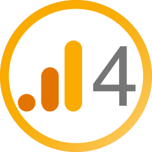
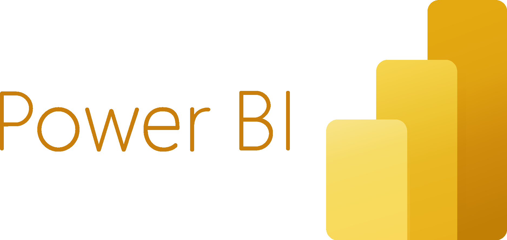
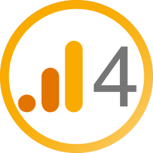
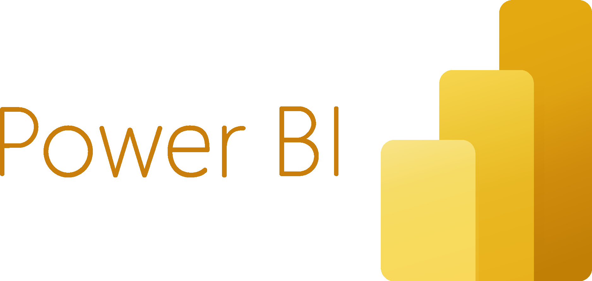
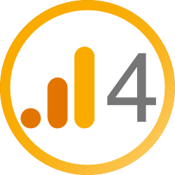
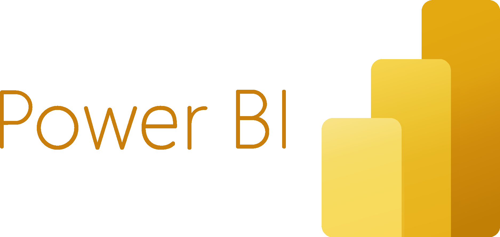

Je forme les entreprises à transformer la donnée en performance. Découvrez mes expertises en Web Analytics, Tracking et Dashboarding.
Analysez et interprétez vos indicateurs clés de performance pour maximiser la croissance digitale.
Apprenez à gérer vos balises et à suivre vos événements utilisateur efficacement.
Créez des tableaux de bord dynamiques et visuels pour un suivi temps réel de vos KPIs.


Vous souhaitez en savoir plus sur mes formations ou discuter de vos besoins en data ? Remplissez ce formulaire et je vous recontacte rapidement.